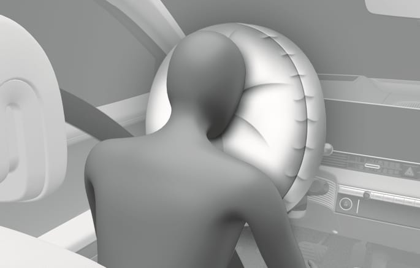

에어백 관련 주의사항

2C_DriverAirbagDeployment
차량을 주행하기 전, 운전자 및 모든 좌석의 탑승자가 안전벨트를 착용했는지 확인하십시오.
-
에어백은 안전벨트의 보호 기능을 돕는 보조 안전장치이므로, 안전벨트를 착용한 경우에만 충돌 발생 시 가장 바람직한 보호 효과를 제공할 수 있습니다.
-
에어백 팽창 시의 부상을 방지하려면 주행 전 안전벨트를 착용하고, 에어백으로부터 적절한 거리를 유지할 수 있도록 시트 위치를 조절하십시오.
-
안전벨트를 착용하지 않거나 시트가 에어백에 지나치게 가까운 경우, 에어백 작동 시 실명을 비롯한 심각한 부상 및 인명피해가 발생할 수 있습니다.
-
에어백 작동으로 인한 얼굴 부상 및 인명피해를 방지하기 위해, 동승석 에어백 장착 차량의 동승석에 유아, 어린이, 임산부 또는 노약자를 앉히거나 유아용 보호 장치를 설치하지 마십시오.